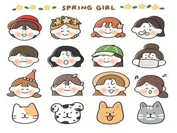
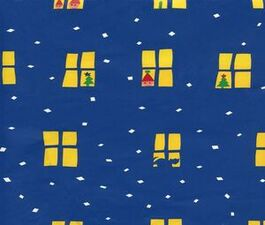
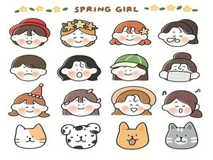
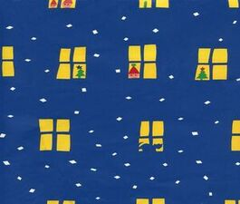
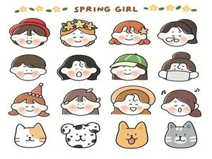
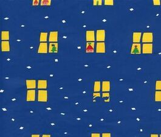

創價新聞
池田先生指導 (2022-12-01 10:00)
女性不論幾歲，都能開出屬於自己的花朵。一個內心堅強的人，會隨著時間熠熠生輝。為此，要擁有目標，不斷成長與進步，進而為他人、為社會，竭盡心力，這點是很重要的。
自己終歸是自己﹐羨慕別人也無濟於事。人有短處﹐也有長處﹐應該正視自己﹐發現長處﹐發展長處。這當中也就有價值創造。
 



池田先生指導 (2022-12-01 10:00)
女性不論幾歲，都能開出屬於自己的花朵。一個內心堅強的人，會隨著時間熠熠生輝。為此，要擁有目標，不斷成長與進步，進而為他人、為社會，竭盡心力，這點是很重要的。
自己終歸是自己﹐羨慕別人也無濟於事。人有短處﹐也有長處﹐應該正視自己﹐發現長處﹐發展長處。這當中也就有價值創造。

